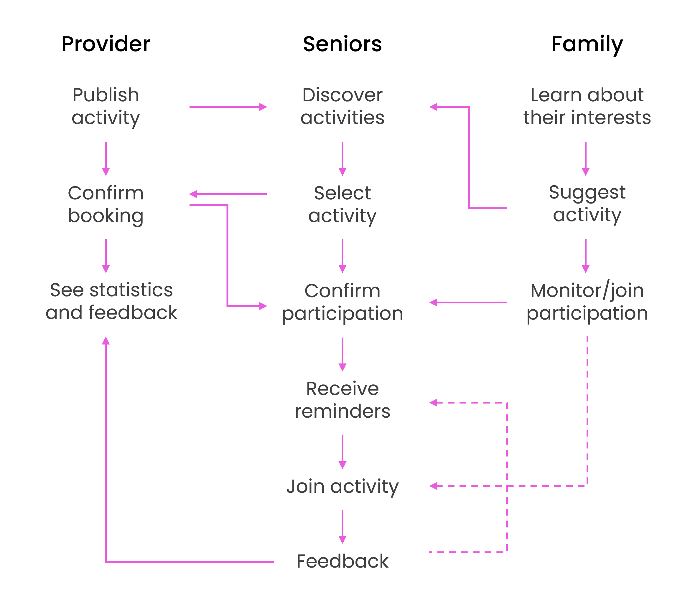

Seniors Club
UX Research · Product & Service Design · Platform Concept
Platform concept connecting older adults with curated activities, social networks, and wellbeing services through a subscription-based digital and physical experience.
Contribution
I defined the conceptual platform structure and service architecture, translating research insights into an initial interaction model and lifecycle framework. This included:
- Structuring the user lifecycle from onboarding to long-term engagement.
- Defining roles, relationships, and participation logic across stakeholders.
- Exploring participation models and value exchange mechanisms to support future business model development.
- Defining the system architecture connecting seniors, families, and providers.
Overview
Older adults often experience isolation and reduced participation in social and cultural life. Existing services are fragmented, difficult to access, or do not adequately support autonomy.
Seniors Club is a platform concept designed to help older adults maintain autonomy, social engagement, and wellbeing through access to curated activities and services. It connects seniors, their families, and partner providers into a unified system, supporting discovery, booking, and ongoing engagement through a structured digital and service experience.
Seniors Club was developed as a product and service design exploration to define how a platform could structure participation, coordination, and long-term engagement across a complex, multi-stakeholder ecosystem.

Structure
Seniors Club was designed as a coordinated platform connecting multiple actors within a single ecosystem. The system defines how users discover activities, subscribe, participate, and maintain ongoing engagement. The lifecycle map establishes the key stages of the product experience and defines how interaction evolves over time. TThis structure supports a future digital platform coordinating activities, subscriptions, and participation.
User Journey Overview
Discovery
Curiosity and emotional resonance — “This feels like something for me (or for my dad).”
Gift or Subscription
Emotional motivation — “I want to gift something that feels human and useful.”
Welcome & Onboarding
Excitement about practical uses — easy onboarding and a physical welcome box.
Exploration & Booking
Empowerment and curiosity — friendly assistant, discover activities, and save favorites in one place.
Engagement & Well-being
Joy and sense of belonging — connect through experiences. Access discounts, wellness offers, and small daily rituals.
Reflection & Retention
Connection and gratitude — visualize milestones and share stories.
Outcome
The project resulted in a conceptual platform framework defining user roles, participation logic, and lifecycle structure. It established a foundation for future prototyping and product development by clarifying how the ecosystem could operate as a coordinated system.
Learnings
- Designing for multi-stakeholder platforms requires defining not only user flows, but also participation logic and incentives across the ecosystem.
- I learned that structuring roles, relationships, and value exchange early helps clarify how a product can operate sustainably over time.
- This project reinforced the importance of designing the system architecture before defining interface solutions.